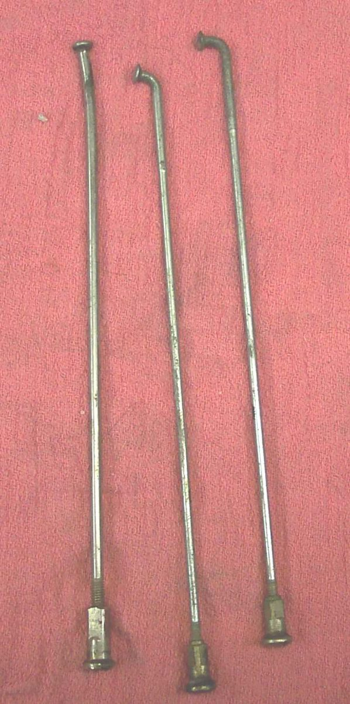
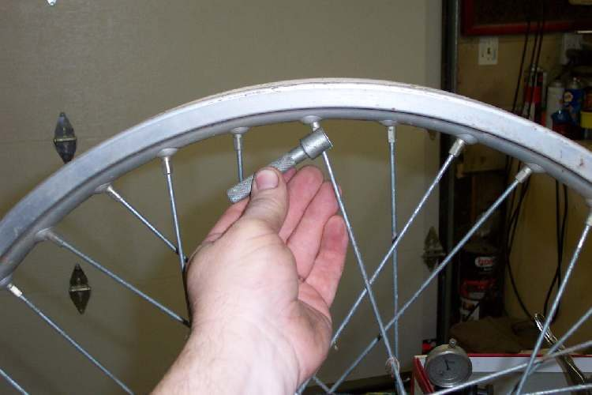
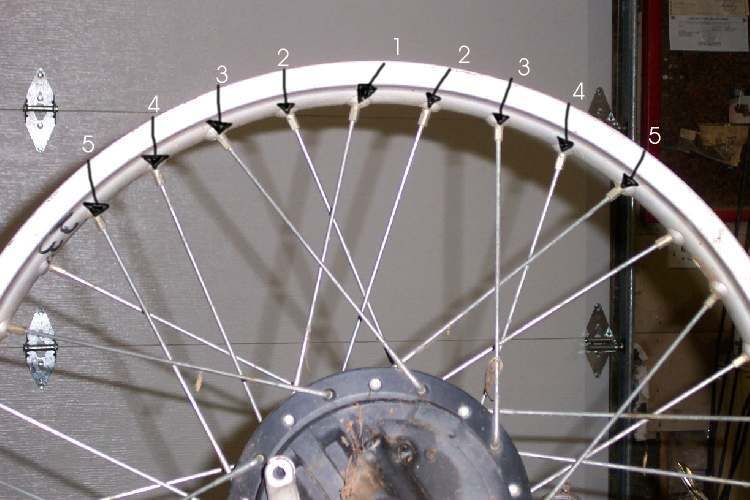

Re-lacing means taking a wire wheel apart and building it again with new spokes, a new rim or a new hub. It is slow work and the wheel must be true when it is done. First decide whether a re-lace is the best choice. Then, if it is, follow the pair-by-pair method that keeps the pattern correct.
Safety
- A wheel with several broken spokes can fail suddenly. Do not ride the bike. Three broken spokes, or two close together, is the limit.
- Wear safety goggles when cutting spokes and when grinding spoke ends.
- Hand tools only. A spoke can spring when cut.
- If you are unsure, take the wheel to a wheel builder. A badly built wheel is a danger at speed.
You need
- A spoke key that fits your nipples, side cutters, a file or grinder, wire.
- A dial gauge on a stand (or a fixed wire pointer for slow bikes) to measure rim run-out and side play.
- Spokes that match the old ones. Check the number, length, thickness and the bend at the head. Straight-head spokes are strongest. Nipple thread type must match too.
- A new rim strip and tube if the rim is open to the tube.
Steps
- Decide first. Options are a new wheel (costly), a used wheel from a breaker (cheaper; check the spokes and the true before buying, and plan new bearings), or a re-lace. Re-lace is the choice when only some parts are bad, but old nipples may be rusted tight, and some spoke threads lock. In that case the spokes must be cut out.
- Count the spokes. The rim and the hub must have the same number.
- Look at the old spokes. There can be up to four types in one wheel: two head bends and two lengths. Keep them sorted. Record which type goes where.
- Tie each pair of spokes (one from each side of the hub) together with wire. Remove all nipples. Lift the rim away from the spokes.
- Cut the wire on one pair. Remove those two spokes. Fit the new ones, or fit the pair into the new hub. Re-wire the new pair together. Repeat pair by pair until all are replaced. This keeps the pattern in front of you.
- Fit the rim. Screw all nipples in by the same amount, finger tight, so the spokes start even.
- Mount the wheel on the bike or on a stand. Set up the dial gauge so it almost touches the inside of the rim. Turn the wheel and note the high spot.
- For out-of-round, tighten the spoke at the highest point a little. Tighten the next four or five spokes on each side of it by smaller amounts, the further away the less. Turn the wheel and repeat.
- For side play, put the gauge on the rim side. Find where the rim moves furthest to one side. Tighten the spokes there that pull toward the other side, in graded amounts. Check both run-out and side play after each round.
- Keep the rim centred between the fork legs or the swingarm. Many small turns work better than a few big ones. If things get worse, stop, do the opposite, or loosen all spokes and start again.
- When the wheel is round, straight and centred, tighten all spokes about half a turn at a time while still checking. Stop when the spokes ring crisply when tapped, or set them with a spoke torque wrench.
- File or grind any spoke end that sticks out of its nipple, so it cannot cut the tube.
- Refit the rim strip and tube. Balance the wheel if it will be run fast.
Check your work
- Run-out and side play are small. The source course asks for no more than about 0.5 mm (0.02 in) for both.
- Spokes ring crisply with similar tone and none stick out of the nipples.
- The wheel is centred in the forks or swingarm and spins freely.
If it did not fix the problem
- Spokes only a little loose: Check spoke tension.
- True an otherwise sound wheel: True a spoke wheel.
- Replace single spokes: Replace a broken spoke.
- Check run-out with a gauge: Check wheel run-out.
- Wheel still wobbles: Wheel is buckled or wobbles.